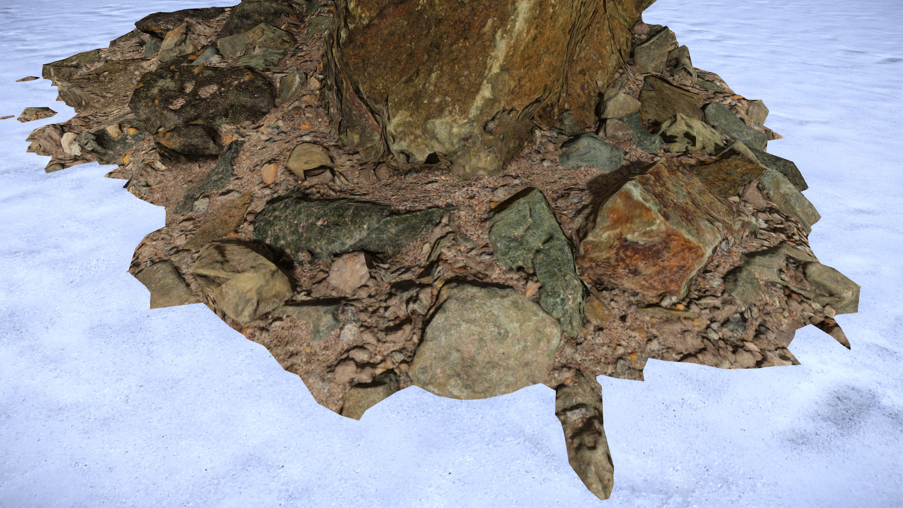

Обзор
Эта функция создает мягкий переход между материалами ландшафта и объектами (например, камнями или стволами деревьев), что обеспечивает гораздо более естественный вид. Он скрывает искусственно выглядящую резкую грань между объектами и местностью.

Реализация
Выберите материал ландшафта в Material Editor.
Вы можете использовать Выбрать материал из объекта кнопку в Material Editor, чтобы выбрать материал из сцены.
- Включить Мягкий тест глубины в Параметры генерации шейдеров.
- Настройте степень смешивания с помощью Коэффициент расстояния испытания мягкой глубины и Диапазон испытаний мягкой глубины.
CVars
Квар/Команда | Описание | Комментарий и примеры |
|---|---|---|
| e_TerrainBlendingDebug 0 | Смешивайте только объекты, у которых установлен FOB_ALLOW_TERRAIN_LAYER_BLEND. | по умолчанию |
| e_TerrainBlendingDebug 1 | Отключить смешивание на всех объектах | |
| e_TerrainBlendingDebug 2 | Включить смешивание для всех объектов |